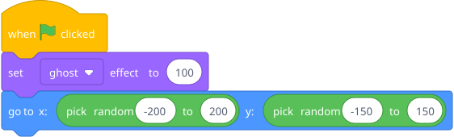
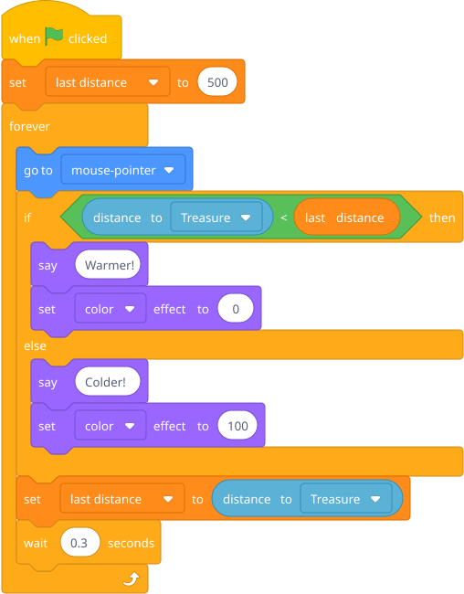
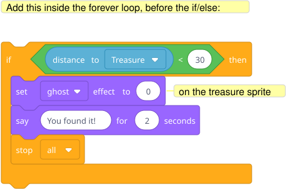
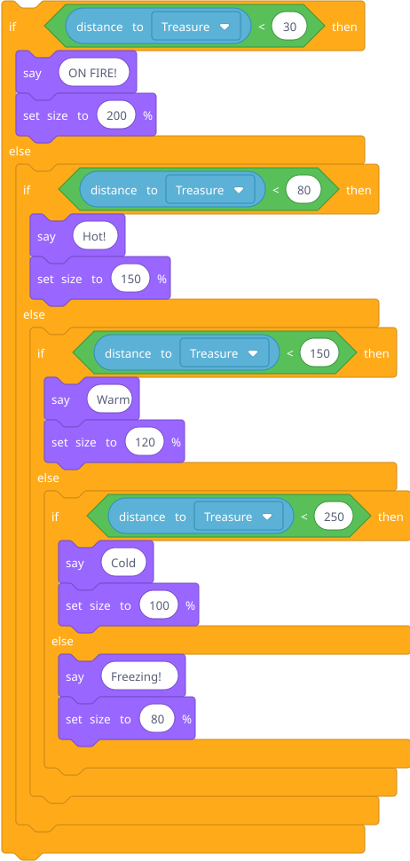

Build a treasure hunt: a hidden sprite, and another sprite that says "warmer" or "colder" as you move the mouse. This requires if/then/else.
Prep: Create two sprites — a small "treasure" sprite and a "detector" sprite that follows the mouse. Hide the treasure by setting its ghost effect to 100 (it's invisible but still detectable).
Treasure sprite:

Detector sprite:

Blocks to point out: if/then/else is under Control — it's a different block than if/then (wider, with two mouths). distance to is under Sensing. The variable last distance remembers where you were so it can compare to where you are now. He'll need to create this variable (Variables → Make a Variable).
This introduces else naturally — there are exactly two cases, and you need to handle both.

Add more levels: "freezing / cold / warm / hot / ON FIRE" using nested if/else.
Hint — blocks he'll need:

This is challenging but his reading level can handle the block nesting, and it's fun to make the reactions dramatic. The size changes give a nice visual cue beyond just the text. In Scratch, the nested if/else blocks visually indent, which actually makes the structure pretty clear.